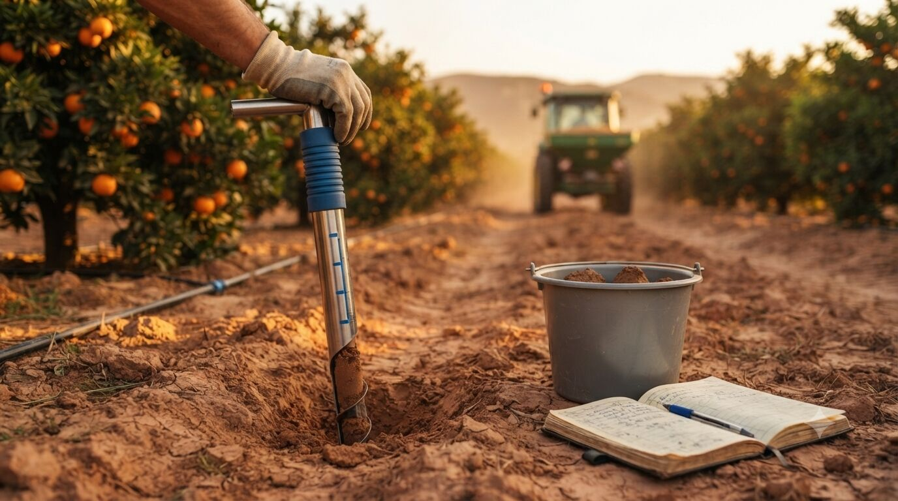

Nutrición del suelo
27 de julio de 2026
Plan de abonado obligatorio: cuenta atrás para el 1 de septiembre de 2026
Tras varios aplazamientos, el plan de abonado ya tiene fecha fija: 1 de enero de 2026 para regadío en ciertos cultivos y 1 de septiembre de 2026 para el resto. Repasamos a quién afecta, las exenciones y cómo prepararlo con tiempo.
Leer artículo →